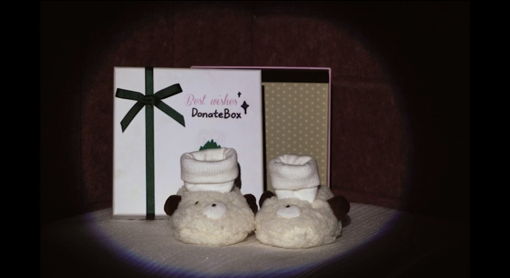

<!DOCTYPE html>
<html>
    <head>
        <title>KejingranKira</title>
            <meta charset="utf-8" />
        <meta name="viewport" content="width=device-width,initial-scale=1.0" />
        <link rel="icon" href="finalimg/k.png" />
        
      </head>
  </html>
  <body>
  <div class="imgx">
    
</div>

  <div class="p1">
    Little shoes   
  </div>
  <div class="p2">
   2021.9
  </div>
  <div class="p3">
    This is a stop-motion animation from the winter of 20 years, made for the Goodwill BUY42 charity shop.
    The story begins with a small pair of shoes that grows up with a baby, plays with a puppy and is eventually transformed into a doll's shoe. It accompanies different directors through different times, being returned to BUY42 again and again for the next journey. Each story gives it a special meaning, and a small pair of shoes has a unique value.
    After the short film was completed, the group and I decided to donate the doll wearing the little shoes to the BUY42 shop to start its next journey...

   <a class="p6" href="filmpage.html">Film</a>


   <iframe src="//player.bilibili.com/player.html?aid=614530410&bvid=BV1Lh4y1G7YR&cid=1156454622&page=1" 
   scrolling="no" border="0" frameborder="no" framespacing="0" allowfullscreen="true" > </iframe>
</body>

<style>
iframe {
    position:absolute;
    top:400px;
    left:70px;
    width:1200px;
    height:800px;

}


body{

/*background: linear-gradient(to bottom, rgb(255, 255, 255) 0%,  rgb(255, 255, 255) 6%, rgba(0, 0, 0, 1) 8%);*/
background-color: rgb(0, 0, 0);

height: 200vh;
position: relative;
max-width: 1600px;
margin: 0 auto;
padding-bottom: 40px;
}


@font-face {
    font-family: 'mboldi';
    src:url('font/MirthaDisplayBoldItalic的副本.otf') format('truetype');
    font-family:'mitalic';
    src:url('font/MirthaDisplayItalic的副本.otf') format('truetype');
    font-family:'mbold';
    src:url('font/MirthaDisplayBold的副本.otf') format('truetype');
    font-family:'mregular';
    src:url('font/MirthaDisplayRegular的副本.otf') format('truetype');
    
    }


.p1{
  position:absolute;
  top:50px;
  left:50px;
  color:rgb(255, 130, 161);
  font-family: mregular;
  font-size: 100px;
}
  
.p2{
  position:absolute;
  top:160px;
  left:50px;
  color:rgb(255, 130, 161);
  font-family: Arial, Helvetica, sans-serif;
  font-size: 20px;
}
  
.p3{
  position:absolute;
  top:200px;
  width:520px;
  left:50px;
  color:rgb(255, 130, 161);
  font-family: Arial, Helvetica, sans-serif;
  font-size: 15px;
}

.p4{
  position:absolute;
  top:600px;
  left:550px;
  color:rgb(255, 130, 161);
  font-family: Arial, Helvetica, sans-serif;
  font-style: italic;
  font-size: 14px;
  
}
.p5{
  position:absolute;
  top:1200px;
  left:550px;
  color:rgb(255, 130, 161);
  font-family: Arial, Helvetica, sans-serif;
  font-style: italic;
  font-size: 14px;
  
}
.p6{
  position:absolute;
  top:-150px;
  left:1230px;
  color:rgb(255, 130, 161);
  font-family: mregular;
  font-size: 100px;
  text-decoration: none;
}
.p6:hover{
  text-shadow: 0 0 30px rgba(255, 198, 228, 0.8);
        color:rgb(255, 255, 255);
        font-style: italic;
       
      
}

  .imgx{
    position: absolute;
    left:950px;
    top:250px;
    width:400px;

  }

 .imgx img {
     width: 100%;
     height: auto;
     object-fit: cover;
     z-index: 99;
    
   }


</style>